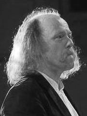

Cees Wouters is in 1955 geboren te Reusel. Hij studeerde Muziek Vakonderwijs Akte A (Hoofdvakdocent Jan Matter, 1985), Koordirectie (Hoofdvakdocent Jacques Wijnen, 1988), en Docentschap Koristenopleiding (1991).
Cees volgde diverse cursussen, onder andere bij de dirigenten Jan Stulen, André Presser (Orkestdirectie) en Jos van Veldhoven (Barokinterpretatie) en Kinderkoordirectie .
Onder zijn bezielende leiding staan het Kempenkoor, het Kempisch Kamerkoor en het Studentenorkest Ensuite dat deel uit maakt van het Eindhovens Studentenmuziekgezelschap Quadrivium.
Cees heeft samengewerkt met verschillende orkesten, waaronder het Brabants Kamerorkest, Het Nederlands Promenade orkest, Kamerorkest Continuo, Atlantis uit Praag, The Philharmonic Orchestra uit Pilsen, Koninklijke Harmonie Sophia's Vereeniging en met de barokorkesten Het Brabantsch Muzyk Collegie en Il Concerto Barocco.
Als dirigent verzorgde Cees veel concerten in binnen- en buitenland, o.a. in Polen, Luxemburg, België , Tjechië en Rusland. In April 2007 dirigeerde Cees als gastdirigent de Carmina Burana in Sint Petersburg. Ook is Cees regelmatig als jurylid betrokken bij korenfestivals in Nederland.
In 1999 en 2000 was Cees samen met Antony Hermus (Generalmusikdirector van de Opera in Hagen D.) en Lucie Hillen (Mezzosopraan en zangpedagoge in Breda) als docent betrokken bij de Nationale Koorweek in Oudenbosch.
In 2002 startte dit drietal onder de naam Vocaal Centraal een eigen koorproject dat jaarlijks in een weekend of vakantieperiode plaatsvindt. Dit koorproject is bedoeld voor zangers met een gedegen koor- en/of solo zangervaring.